Rigid Motions in \mathbf{\mathbb{R}^3}
Contents
Rigid Motions in \(\mathbf{\mathbb{R}^3}\)#
Welcome back! Let’s take a brief moment to discuss where we currently
are in our exploration of robotics.
Thus far, we’ve been talking primarily about the structure of
rotations. We’ve defined a specific set of criteria for rotations,
developed a theory of rotations using the language of linear algebra,
and constructed an elegant representation of rotations using exponential
coordinates.
Where do we go from here? You may remember that, all the way at the
beginning of our discussion of rigid motions, we made the statement that
all rigid motions may be broken up into rotations and translations.
Right after mentioning this, we promised to come back to the study of
translational motion after thoroughly exploring rotations.
In this section, we’ll make good on that promise, and extend the theory
we’ve developed about rotational motions to the the motion of rigid
bodies that both rotate and translate.
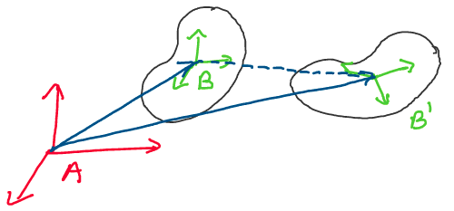
Above: How may we describe the motion of a rotating, translating rigid
body?
All the while, we’ll be inching closer towards developing a practical, powerful theory we’ll be able to use to describe the motion of robots. Once we’ve developed some key results in the motion of rotating, translating rigid bodies, we’ll have all we need to begin our investigation of manipulator arms, vehicles, quadcopters, and more. Let’s begin!
Generalizing \(SO(3)\)#
Let’s begin with a review of how we framed the rotational motion of rigid bodies. When describing the configuration of a rigid body undergoing pure rotation, we were able to understand its motion using a rotation matrix, \(R \in SO(3)\).
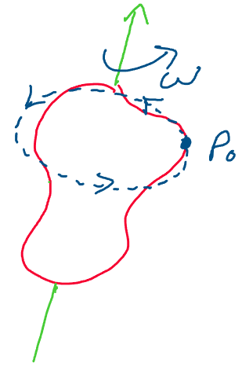
Above: every configuration of a rigid body undergoing rotation may be
described with a rotation matrix
When we want to describe the motion of rigid bodies that both
translate and rotate, we only need one more thing in addition to
this rotation matrix. To fully describe the configuration of a rigid
body that both translates and rotates, we use the following pair: a
rotation matrix between the initial and final configurations of the
body, and the location of a point on the rigid body.
Let’s visualize this by considering a rigid cube which rotates and
translates in space.
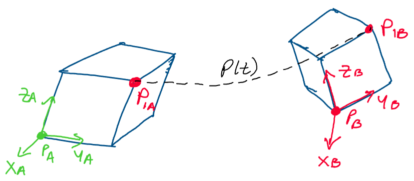
Above: a rigid cube rotates and translates through space.
To find the relative orientation between the two
configurations of the cube, we may use the same rotation matrices we’ve
been using thus far. To find how the cube has translated in space, we
may track the position of a point on the cube.
For convenience, we will always choose the origin of the coordinate
frame as the point we track.
Thus, we conclude that we may describe a general rigid body motion with
the pair \((R_{ab}, p_{ab})\), where \(R_{ab}\in SO(3)\) is the rotation
matrix between configurations \(A\) and \(B\), and \(p_{ab}\in \mathbb{R}^3\)
is a position vector between the origin of configuration \(A\) and the
origin of configuration \(B\).
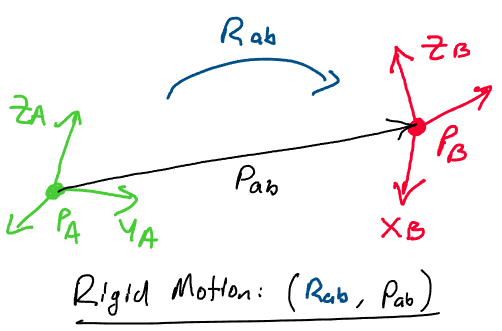
Above: we describe the rigid transformation between two coordinate
frames with a rotation \(R\in SO(3)\) and a translation
\(p_{ab}\in \mathbb{R}^3\).
Just as we gave a name to the set of all rotation matrices \(SO(3)\), we also give a name to the set of all pairs of rotation matrices and translations. We define:
Where “\(SE\)” stands for special Euclidean, and \(3\)
refers to the dimension of our space. Note that since this set contains
all possible combinations of rotations and translations, it describes
the entire set of 3D rigid body transformations.
We may easily extend the definition of \(SE(3)\) to higher dimensions as
follows:
As with \(SO(3)\), we’ll generally restrict our discussion to two and three dimensions.
Homogeneous Coordinates#
Now that we’ve defined some basic terms and concepts in rigid body
motions, we’d like to step things up a level and begin looking for some
mathematical footing.
Imagine that we have a point \(q_a\) represented with respect to
coordinate frame \(A\). Suppose that frame \(A\) undergoes a rigid body
transformation where it rotates with rotation matrix \(R_{ab}\) and
translates with translation \(p_{ab}\) to a new configuration, frame \(B\).
Now, we’d like to find the relationship between \(q_a\) and \(q_b\), its
position in the new configuration, in terms of \(R_{ab}\) and \(p_{ab}\).
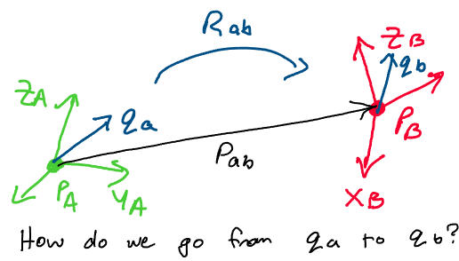\
We may do this by breaking the rigid motion down into its two parts. First, let’s consider the rotation. Let’s multiply \(q_b\) by \(R_{ab}\) and think about what this gives us.
By the definition of rotation matrices, this will give
us the point \(q_b\) represented in a frame whose axes are aligned with
those of frame \(A\). However, to represent it in frame \(A\) itself, we
must not only align the axes with frame \(A\), but translate the vector so
that it is represented with respect to the origin of frame \(A\).
Applying this translation, we conclude:
This is known as an affine transformation. Instead of
the transformation between frames \(A\) and \(B\) being a pure matrix
multiplication, we must add on another vector to complete the
transformation.
This affine representation isn’t very satisfying! When dealing with the
mathematics of motion, we like to represent things using just
matrices - the extra addition will clutter our description of motion.
To represent this transformation with a pure matrix multiplication, we
define the homogeneous coordinates of a point. Given a point
\(p\in \mathbb{R}^3\), where \(p = (p_1, p_2, p_3)\), the homogeneous
coordinates of \(p\) are defined:
Note that finding the homogeneous coordinates of the
point simply involves appending a 1 to the end of the original point -
there’s no extra work that needs to be done.
With these homogeneous coordinates in mind, let’s take another look at
the equation we derived above. Instead of using the normal
representation of \(q_a\), let’s try using the homogeneous representation,
\(\overline{q}_a\).
We may now rewrite this expression as the matrix multiplication:
Thus, using the definition of homogeneous coordinates,
we conclude that we can write any rigid body transformation
\(q_a = R_{ab}q_b + p_{ab}\) with a single matrix multiplication using
homogeneous coordinates!
We name the \(4\times 4\) transformation matrix between \(\overline{q}_b\)
and \(\overline{q}_a\) “\(g_{ab}.\)”
The matrix \(g_{ab}\) is called the homogeneous
representation of the rigid body transformation between configurations
\(A\) and \(B\).
As all rigid body transformations may be represented using this format,
we may use it to write an alternate characterization of \(SE(3)\):
This definition states that \(SE(3)\) may be characterized
by the set of \(4\times 4\) homogeneous transformation matrices
constructed from 3D rotation matrices and translation vectors.
Before we move on to derive further properties of \(SE(3)\), it’s
important to clarify some subtleties of the definition of homogeneous
coordinates. Recall that we defined the homogeneous coordinates of a
point, \(p\in \mathbb{R}^3\), to be:
You may remember from earlier in the course that we
define a vector as the difference between two points. How does this
definition translate into the language of homogeneous coordinates?
Imagine we have two points, \(p, q \in \mathbb{R}^3\), and a vector
\(v = p - q\). In homogeneous coordinates:
Thus, the homogeneous coordinates of a vector will have
a zero appended to the end, rather than a 1. In general, we therefore
consider those with zeros appended to the end to be vectors, and those
with ones appended to the end to be points.
Using this concept, we may show that the sum of a point and a vector is
a point, as it gives a “1” in the final entry, and that the sum of a
point and a point is a nonsensical operation, as it gives a “2” in the
final entry instead of a 1 or 0.
Properties of \(SE(3)\)#
Composing Transformations#
Now that we have a definition of \(SE(3)\) in terms of matrices, we may
begin to explore some of its properties in greater depth. Let’s take a
moment to think about how we may compose rigid body transformations in
\(SE(3)\).
If we have three configurations in space, \(A\), \(B\), and \(C\), and we know
the transformation from \(A\) to \(B\) and from \(B\) to \(C\), how may we
define the transformation from \(A\) to \(C\)?
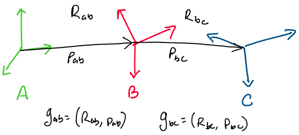
Let’s think about the transformations one at a time. Imagine that we
have some point in frame \(C\), and we want to find its representation in
frame \(A\). How might we go about doing this?
Let’s start by bringing it into configuration B! We know that in frame
\(B\), the point is represented as follows:
Now, we have a point \(q_b\) that we’d like to bring into frame \(A\). We apply the transformation from \(B\) to \(A\) as follows:
Now, we substitute in for \(q_b\) and simplify:
Great! We now have an expression that takes us from \(q_c\) directly to \(q_a\). Now, we want to see if there’s any way we can represent this transformation using homogeneous coordinates. How can we find a transformation \(g_{ac}\) such that:
Looking at the equation we derived above, we find the following relationship:
Thus, we have found the homogeneous transformation from
frame \(C\) to frame \(A\)! If we inspect the homogeneous transformation
matrix, we find that it does indeed follow the homogeneous
transformation matrix format we’ve discussed thus far. In the upper
left, we have a rotation matrix, in the upper right, a position vector,
and on the bottom row, a row of zeros and a 1.
Let’s try to break down this matrix into two smaller pieces and see if
we recognize anything.
Recognizing these two matrices as \(g_{ab}\) and \(g_{bc}\), we conclude:
Thus, we may compose rigid body transformations in homogeneous coordinates through matrix multiplication. This is a useful result that will make applying rigid body transformations in homogeneous coordinates much more intuitive.
Is \(SE(3)\) a Group?#
Recall that when developing the properties of the set of rotation
matrices, an important step was establishing that \(SO(3)\) was a group
under matrix multiplication. This allowed us to come to many useful
conclusions, such as the product of two rotation matrices being another
rotation, the inverse of a rotation matrix always existing, and more!
Just as it was important to our study of rotations to show that \(SO(3)\)
is a group under matrix multiplication, it’s equally as important to
show the same for \(SE(3)\).
Proposition 10
\(\mathbf{(SE(3), \cdot)}\) is a group
The set of all rigid body transformations, \(SE(3)\), forms a group under
the binary operation of matrix multiplication.
Proof: Recall that to prove something is a group, we must show that it satisfies all of the group properties. Let’s go step by step through the group properties and show that \(SE(3)\) meets the requirements.
The set is closed under its binary operation: First we must show that the product of any two elements of \(SE(3)\) is an element of \(SE(3)\). Let’s begin!
Let \(g_1\), \(g_2\) be arbitrary homogeneous transformation matrices in \(SE(3)\). We calculate the product of these two matrices as follows:\[\begin{split}\begin{aligned} g_1g_2 = \begin{bmatrix} R_1 & p_1\\ 0 & 1 \end{bmatrix} \begin{bmatrix} R_2 & p_2\\ 0 & 1 \end{bmatrix} = \begin{bmatrix} R_1R_2 & R_1p_2 + p_1\\ 0 & 1 \end{bmatrix} \end{aligned}\end{split}\]Note how this product is the same product we encountered in our discussion of composition of transformations!
Let’s take a moment to verify once again that it is an element of \(SE(3)\).
First, we verify that the matrix in the top left is an element of \(SO(3)\). We know that since \(R_1, R_2 \in SO(3)\), by the group property of \(SO(3)\), their product, \(R_1R_2 \in SO(3)\). Great! This means that the upper left element is correct.
Let’s check that the upper right entry is an element of \(\mathbb{R}^3\). We know that \(R_1p_2 \in \mathbb{R}^3\) by the rules of matrix multiplication. Thus, the sum \(R_1p_2 + p_1 \in \mathbb{R}^3\) as well. On the bottom row, we see the necessary \([0\; 1]\).
As all of these characteristics match the definition of \(SE(3)\), we conclude that the product \(g_1g_2 \in SE(3)\).The set has a unique identity element, \(\mathbf{g_e}\): Let’s think about what the identity element would be for a general rigid transformation involving both rotation and translation. We know that the identity for a rotation is \(R_e = I_3\).
For a translation, we simply take the case where we don’t move at all! Thus, \(p_e = 0\), the zero vector. Thus, in \(SE(3)\), we conclude that the following is the identity:\[\begin{split}\begin{aligned} g_e = \begin{bmatrix} I_3 & 0\\ 0 & 1 \end{bmatrix} = \begin{bmatrix} 1 & 0 & 0 & 0\\ 0 & 1 & 0 & 0\\ 0 & 0 & 1 & 0\\ 0 & 0 & 0 & 1\\ \end{bmatrix} = I_4 \end{aligned}\end{split}\]Since the identity element for rotation matrices is unique, and there is no single translation other than the zero vector that will take you to the same configuration, we conclude that this identity must be unique.
Every element \(g \in SE(3)\) has a unique inverse \(g^{-1} \in SE(3)\) such that \(g g^{-1} = g_e\).
We can prove this statement by constructing an explicit formula for the inverse of a homogeneous transformation matrix. Consider an arbitrary homogeneous transformation, \(g = (R, p) \in SE(3)\).
We’d link to find a matrix \(g^{-1} = (R', p') \in SE(3)\) such that:\[\begin{split}\begin{aligned} \begin{bmatrix} R & p\\ 0 & 1 \end{bmatrix} \begin{bmatrix} R' & p'\\ 0 & 1 \end{bmatrix} = I_4 \end{aligned}\end{split}\]Let’s perform this multiplication and see if we can figure out what \(R'\) and \(p'\) are!
When we perform this multiplication, keep in mind that we’ll be writing it in terms of blocks within the matrix. Note that the rules for multiplying matrices that we’ve blocked into smaller pieces are the same as those for normal matrix multiplication. Let’s begin!\[\begin{split}\begin{aligned} \begin{bmatrix} R & p\\ 0 & 1 \end{bmatrix} \begin{bmatrix} R' & p'\\ 0 & 1 \end{bmatrix} = \begin{bmatrix} RR' & Rp' + p\\ 0 & 1 \end{bmatrix} = \begin{bmatrix} 1 & 0 & 0 & 0\\ 0 & 1 & 0 & 0\\ 0 & 0 & 1 & 0\\ 0 & 0 & 0 & 1\\ \end{bmatrix} \end{aligned}\end{split}\]To determine the conditions we want \(R'\) and \(p'\) to meet, we match terms in the matrices. Thus, for this product to equal the identity matrix, we have the following conditions:
\[\begin{split}\begin{aligned} I_3 &= RR'\\ 0 &= Rp' + p \end{aligned}\end{split}\]Let’s solve these equations for \(R'\) and \(p'\) one at a time. Starting with the first:
\[\begin{split}\begin{aligned} RR' &= I_3\\ R' &= R^{-1}\\ R' &= R^T \end{aligned}\end{split}\]Where in the last step, we apply the property of \(SO(3)\) that the inverse of a rotation matrix is equal to its transpose. Since the inverse of a rotation matrix is unique, we conclude that the solution for \(R'\) is unique as well.
To solve for \(p'\), we look at the second equation.\[\begin{split}\begin{aligned} 0 &= Rp' + p\\ -p &= Rp'\\ -R^Tp &= p' \end{aligned}\end{split}\]Where in the last step, we once again used the property of \(SO(3)\) that \(R^T = R^{-1}\). Note that the solution to this equation is also unique! Where does this solution leave us?
We conclude that for any homogeneous transformation \(g = (R, p) \in SE(3)\), the inverse of \(g\) may be expressed:\[\begin{split}\begin{aligned} g^{-1} = \begin{bmatrix} R^T & -R^Tp\\ 0 & 1 \end{bmatrix} \end{aligned}\end{split}\]Because this matrix is always defined and an element of \(SE(3)\) for all choices of \(R\) and \(p\), we conclude that every \(g \in SE(3)\) has a unique inverse \(g^{-1} \in SE(3)\).
The binary operation is associative on the set. Just as with \(SO(3)\), this is the simplest group property to prove. Because matrix multiplication is associative for any matrix, multiplication is automatically associative on \(SE(3)\).
As \(SE(3)\) satisfies all of the necessary properties, we conclude that \(SE(3)\) is a group. This completes the proof! \(\square\)
Amazing! We have almost all of the properties we’d like \(SE(3)\) to
satisfy. Before we continue, we have one more formality that we need to
develop.
Recall that in our definition of \(SE(3)\), we assumed that elements of
\(SE(3)\) were rigid body transformations. Before we move on, it’s
important that we take the time to verify that this actually is the
case.
Although proving results like this might seem somewhat inconsequential,
remember that it’s this proof-based footing that will allow us to make
sure our conclusions about rigid bodies are sound.
Proposition 11
Elements of \(\mathbf{SE(3)}\) are Rigid Body
Transformations
Given a rigid body transformation \(g \in SE(3)\) consisting of both a
rotation \(R \in SO(3)\) and a translation \(p \in \mathbb{R}^3\), \(g\) is a
rigid body transformation. This implies:
\(g\) preserves distance between points:
\[\begin{aligned} ||g(d-q)|| = ||d-q|| \; \forall \; d, q\in \mathbb{R}^3 \end{aligned}\]\(g\) preserves orientation between vectors:
\[\begin{aligned} (g(v))\times(g(w)) = g(v\times w) \; \forall \; v, w \in \mathbb{R}^3 \end{aligned}\]
Before we begin the proof, it’s important to take note of the new
mathematical notation we used in the proposition above. The symbol
\(\forall\) means “for all,” when read out loud. For example,
\(\forall \; v \in \mathbb{R}^3\) means “for all vectors \(v\) in
\(\mathbb{R}^3\).”
With this in mind, let’s begin the proof!
Proof: We may prove this proposition by proving each statement one
at a time. Let’s begin with the first statement, that \(g\) preserves the
distance between points.
Let \(g\) be an arbitrary element of \(SE(3)\), with rotation matrix
\(R \in SO(3)\) and translation \(p \in \mathbb{R}^3\). Suppose that we have
two arbitrary points, \(d, q\in \mathbb{R}^3\). Instead of working
directly with these points, there’s a shortcut that will help us out!
Recall that the difference of two points is a vector. Let’s define the
vector \(v = d - q\in \mathbb{R}^3\), and try working with this instead!
Using our vector \(v\), our proof simplifies to showing:
To prove this statement, let’s try working in homogeneous coordinates. We know that for any vector \(v \in \mathbb{R}^3\), the homogeneous coordinates of the vector are:
Recall that to convert a vector into homogeneous
coordinates, we append a zero to the end. Be careful not to append a
one - we do that for points, not vectors!
Let’s apply the rigid body transformation \(g\) to this vector in
homogeneous coordinates.
Now, we take the norm of both sides, and apply the property that rotations preserve the length of vectors:
Substituting in the definition of our vector \(v\), we observe:
Great! This proves the first property. Now let’s take a
look at the second.
We want to show that \(g(v) \times g(w) = g(v\times w)\) for arbitrary
vectors \(v, w \in \mathbb{R}^3\). Once again, we’ll work in homogeneous
coordinates to prove this statement. Let \(\overline{v}, \overline{w}\) be
the homogeneous coordinates of vectors \(v\) and \(w\).
By the definition of our transformation \(g\) and the vectors \(v\) and \(w\),
we find:
Moving from homogeneous coordinates back to the original representation of the vector, this tells us that for any rigid body transformation \(g\in SE(3)\) and any vectors \(v, w \in \mathbb{R}^3\):
Now, we may prove the statement about the cross product. Using our results from above, this statement is equivalent to showing:
But, we notice that this statement is equivalent to the
statement we proved when showing rotations are rigid body transforms!
Thus, we already know that the second statement also must be true.
As transformations in \(SE(3)\) satisfy both properties of rigid body
transformations, we conclude that all transformations in \(SE(3)\) are
rigid body transformations. This completes the proof. \(\square\)
Exponential Coordinates on \(SE(3)\)#
Where do we go from here? We’ve developed a convenient framework for
representing general rigid body transformations, we’ve shown that the
set of these transformations is a group under multiplication, and we’ve
verified that our representation of these transformations is actually
rigid!
Our next step in the development of general rigid motion will closely
mirror our development of rotation matrices. Recall that when taking a
closer look at the structure of rotation matrices, we found a set of
constraints on \(SO(3)\) that reduced its dimension. Instead of \(SO(3)\)
being a 9-dimensional space, as one might expect for a set of
\(3\times 3\) matrices, we found that there were 6 fundamental constraints
on the entries of all rotation matrices. This led to our eventual
development of exponential coordinates, which gave us a way to
efficiently represent rotations with only 3 parameters!
If we were able to represent the group of rotation matrices, \(SO(3)\),
with only 3 parameters, it’s not unreasonable to think we might be able
to do something similar for \(SE(3)\)! In this section, we’ll develop a
similarly efficient representation for \(SE(3)\).
Restrictions on \(SE(3)\)#
Let’s begin by analyzing the restrictions on the set of all homogeneous
rigid body transformations. Suppose we have an arbitrary rigid body
transformation \(g \in SE(3)\) with an associated rotation matrix
\(R \in SO(3)\) and translation \(p \in \mathbb{R}^3\).
Using our now familiar definition of homogeneous transformation
matrices, we know we can represent \(g\) in homogeneous coordinates as:
Are we able to independently change all 16 entries of
this matrix while having it remain in \(SE(3)\)? Let’s find the total
number of restrictions on this matrix, and see if we can find out how
many terms we can truly independently control!
First, let’s take a look at the rotation matrix, \(R\). From our previous
development of rotation matrices, we already know that there are 6
restrictions on the entries of rotation matrices. Recall that these come
from the following conditions on the columns of rotation matrices:
Thus, \(g\) already has \(6\) restrictions. What other restrictions are there on our matrix in \(SE(3)\)? We know that by definition, the bottom row of the matrix must always be:
This gives us four more restrictions on the entries of
\(g\).
Finally, let’s take a look at the point, \(p \in \mathbb{R}^3\). Are there
any restrictions on the point? Since all we require is that the point is
a 3D vector filled with real entries, \(p \in \mathbb{R}^3\) applies no
further restrictions to the matrix! The translation for a rigid motion
can be anything.
This leaves us with a total of \(6 + 4 = 10\) restrictions on the matrix.
Since \(g\) has 16 entries total, and 10 restrictions on those entries, we
hypothesize that we should be able to represent every rigid body
transformation \(g\) using only \(16 - 10 = 6\) parameters! What could they
be?
A Twist in the Plot#
We may begin answering this question by splitting up rigid body
transformations into their two parts: rotations and translations. We’ll
find it easier deal with each part separately, and come back and unite
them at the end!
Case 1: Pure rotational motion
Let’s start by examining purely rotational motion in \(SE(3)\). Imagine
we have a rigid body that rotates with angular velocity
\(\omega \in \mathbb{R}^3\):
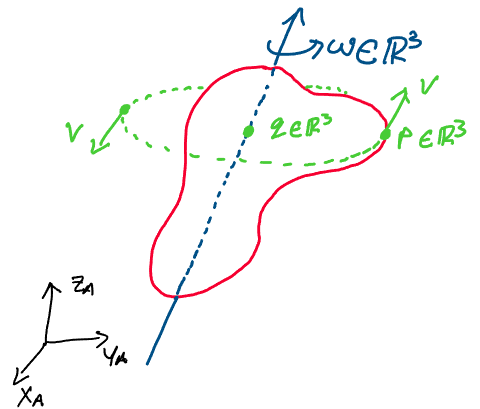
Remember, this body is only rotating, not translating!
This rigid body has a point \(p\in \mathbb{R}^3\) somewhere on the body
and a point \(q\in \mathbb{R}^3\) somewhere on its axis of rotation. Note
that we take both \(p\) and \(q\) to be represented in the world frame.
We recall that we may express the velocity of a point \(p\) on a rotating
body using the following relationship:
Where \(p - q\) is the position vector from the axis of rotation to the point of interest. Instead of jumping straight to solving this equation, like we did for \(SO(3)\), we’ll first rewrite it in homogeneous coordinates as follows:
Note that the homogeneous coordinates constant \(1\)
becomes 0 because the time derivative of a constant is always 0.
Let’s now see if we can factor out the point \(p\) in homogeneous
coordinates. If we’re able to achieve this, we’ll have found a
transformation from \(p\) to \(\dot p\) in homogeneous coordinates. We find:
Amazing! We now have a transformation between a point in
homogeneous coordinates and its derivative in homogeneous coordinates.
Let’s take a closer look at the matrix that performs this
transformation. In one entry, we have \(\hat\omega\), and in another
entry, we have \(-\hat\omega q = -\omega \times q\). By our definition of
angular velocity, this second entry, \(-\omega \times q\), must be a
type of linear velocity! Let’s call this velocity \(v\) for convenience.
Note that this is not the linear velocity of point \(p\) in the world
frame, but rather a component of that velocity. This gives us the
expression:
We give the \(4\times 4\) matrix in this equation a special name, \(\hat\xi\). Using our new names for all of the terms in the equation, we have:
Recognizing this as a linear matrix differential equation, we may apply the matrix exponential to solve for \(\overline{p}(t)\):
Recall that earlier, we assumed that \(||\omega|| = 1\). This means that for every 1 second that passes, the rigid body rotates by 1 radian about the axis of rotation. This implies that the time, \(t\), equals the angular displacement of the body, \(\theta\). Thus, we may write the final relation in terms of angular displacement as:
Thus, we conclude that for a rotating rigid body, we may
use the matrix exponential of the matrix \(\hat\xi\) to map between the
initial configuration and the configuration of the body after being
rotated by \(\theta\) about an axis of rotation \(\omega\).
Before we discuss what this \(\hat\xi\) actually represents, let’s gain
some more perspective by treating the case of pure translational
motion.
Case 2: Pure translational motion
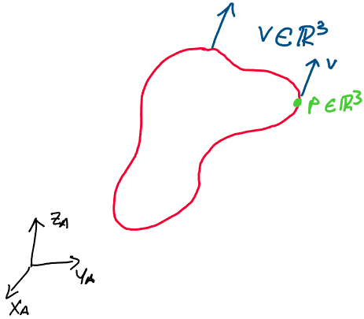\
Imagine that an arbitrary rigid body is moving through space under
pure translational motion. Suppose that this rigid body movies with
velocity \(v \in \mathbb{R}^3\), and that \(||v|| = 1\). Since the body is
rigid and isn’t rotating, this means that every point on the body
moves with this velocity \(v\).
Thus, picking an arbitrary point \(p\) on the rigid body, we may write the
following differential equation describing the motion of \(p\):
This differential equation simply comes from the definition of velocity as the time derivative of position. As we did with the rotating case, let’s rewrite this in homogeneous coordinates.
Previously, we aimed to write the differential equation
for the motion of the point as a mapping from its homogeneous
coordinates to its derivative in homogeneous coordinates. Let’s do the
same here!
We may write this mapping as follows:
Once again, we find a \(4\times 4\) matrix that maps the
point in homogeneous coordinates to its derivative. Curiously, this
mapping also has a velocity term appearing in its upper right entry!
Although at the moment, this might seem like a roundabout way of
approaching this problem, the pattern of the \(4\times 4\) matrix
appearing is no coincidence, and is something we’ll be able to make
great use of! We’ll soon formalize the reason for its appearance.
Once again, we name this \(4\times 4\) matrix \(\hat\xi\). Writing out our
equation in full:
Recognizing this as a linear matrix differential equation, we solve for \(\overline{p}(t)\) using the matrix exponential:
Remember that when setting up this problem, we mentioned
that \(||v|| = 1\). What effect does this have on our solution? If
\(||v|| = 1\), for every second that passes, we will travel 1 unit of
distance in the direction of the velocity vector. Using this fact, if we
define the linear displacement of the rigid body to be \(\theta\), we
conclude that for \(||v|| = 1\), \(\theta = t\).
Substituting, we end up with the equation:
Miraculously, the matrix exponential also gives us a
map between the initial configuration of a rigid body and its
configuration after translating by \(\theta\) units of distance!
Furthermore, this exponential has the exact same form as for pure
rotational motion, only subject to the choice of \(\hat\xi\)! What’s
really going on here? What does \(\hat\xi\) really represent?
Let’s take a closer look. In general, we define \(\hat\xi\) using two
vectors: an angular velocity \(\omega \in \mathbb{R}^3\) and a linear
velocity \(v \in \mathbb{R}^3\), where \(\omega\) may be the zero vector. We
express \(\hat\xi\) as:
This definition is one that’s extremely important to
the study of rigid body transformations! As we saw above, this is a very
powerful matrix - we were able to use matrices of this form to compute
both rotational and translational rigid body transformations.
The set of matrices of this form is so important that it has a special
name!
Definition 8
\(\mathbf{se(3)}\)
The set of all matrices of the form:
Where \(\omega, v \in \mathbb{R}^3\) is called \(se(3)\). Formally, we may express this as:
\(se(3)\) is also known as the twist space.
You may recall how, when dealing with rotation matrices, we defined a
set \(so(3)\), which helped us solve for rotation matrices using the
matrix exponential. \(se(3)\) is a generalization of \(so(3)\) to the set
of all rigid body transformations!
Using elements of \(se(3)\), we may generate different rigid body
transformations in \(SE(3)\) using the matrix exponential.
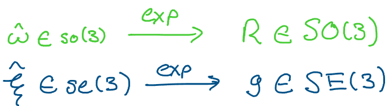
Above: just like \(so(3) \to SO(3)\) using the matrix exponential,
\(se(3) \to SE(3)\) using the matrix exponential!
Something that you might have been wondering is - why use the hat symbol? A clue to why this is lies in the definition of \(so(3)\). Using the definition of the hat map, we know that every matrix \(\hat\omega \in so(3)\) actually came from a vector \(\omega \in\mathbb{R}^3\). Is there a vector corresponding to \(\hat\xi\)? What might it be? Let’s take one more look at the definition of \(\hat\xi \in se(3)\).
We notice that we may generate the entire matrix \(\hat\xi \in \mathbb{R}^{4\times 4}\) using just two vectors, \(\omega, v \in \mathbb{R}^3\). Thus, just as there was a vector \(\omega \in \mathbb{R}^3\) corresponding to every \(\hat{\omega}\), there is a vector \(\xi\) corresponding to every \(\hat\xi\). We define this vector by extracting the \(v\) and \(\omega\) from \(\hat\xi\) and stacking them on top of each other:
This six-dimensional vector is known as a twist! A
twist \(\xi\) is a generalization of an axis of rotation \(\omega\) to the
case of general rigid body motion.
Just as we defined a hat map on \(\mathbb{R}^3\) that took us between
\(\omega \in \mathbb{R}^3\) and \(\hat\omega \in so(3)\), we may define a
second hat map that takes us from \(\xi = (v, \omega) \in \mathbb{R}^6\)
to \(\hat\xi \in se(3)\).
Definition 9
The hat map on \(\mathbf{\mathbb{R}^6}\)
Given a vector \(\xi \in \mathbb{R}^6\), defined:
The hat map of \(\xi\) is defined \(\wedge: \mathbb{R}^6 \to se(3)\) such that:
This is also referred to as the “wedge map.”
As it’s also important to extract \((v, \omega)\) from a matrix in \(se(3)\), we define the inverse operation, the vee map.
Definition 10
The vee map
Given a matrix \(\hat\xi \in se(3)\), the vee map of \(\hat\xi\) is defined
\(\vee:se(3) \to \mathbb{R}^6\) such that:
In summary, the hat map on \(\mathbb{R}^6\) will take us from a twist
vector \(\xi = (v, \omega) \in \mathbb{R}^6\) to a matrix
\(\hat\xi \in se(3)\), whereas the vee map will take us from a matrix
\(\hat\xi \in se(3)\) back to a twist vector
\(\xi = (v, \omega) \in \mathbb{R}^6\).
We’ve just covered an enormous amount of material! Let’s take a moment
to summarize what we’ve discovered about representing general rigid body
motions using exponential coordinates.
Representing pure rotational motions:
Let’s review the steps for representing pure rotational motion in \(SE(3)\) using exponential coordinates. For every pure rotation, we may define a unit axis of rotation, \(\omega \in \mathbb{R}^3\), such that \(||\omega|| = 1\).
Using this axis, we define a twist corresponding to the rotational motion:\[\begin{split}\begin{aligned} \xi = \begin{bmatrix} v\\ \omega \end{bmatrix} = \begin{bmatrix} -\omega \times q\\ \omega \end{bmatrix} \end{aligned}\end{split}\]Where \(q\in \mathbb{R}^3\) is any point on the axis of rotation.
Using exponential coordinates, we may compute the transformation from an initial point on the rigid body \(\overline{p}(0)\) to \(\overline{p}(\theta)\), its position after a rotation about \(\omega\) by an angle \(\theta\). This transformation is defined:\[\begin{aligned} g = e^{\hat\xi \theta} \end{aligned}\]And may be used as follows:
\[\begin{aligned} \overline{p}(\theta) = e^{\hat\xi \theta} \overline{p}(0) = g \overline{p}(0) \end{aligned}\]Representing pure translational motions:
How can we compute the transformation associated with a pure translation in exponential coordinates? For every pure translation, we may define a unit velocity vector, \(v \in \mathbb{R}^3\), that points in the direction of translation. Remember, \(||v|| = 1\). Because this is a pure translation, the angular velocity vector of the body, \(\omega \in \mathbb{R}^3\), must equal 0.
Thus, for a pure translation, we define the twist:\[\begin{split}\begin{aligned} \xi = \begin{bmatrix} v\\ 0 \end{bmatrix} \end{aligned}\end{split}\]Using this twist, we can compute the transformation of translating by \(\theta\) units of distance in the direction of \(v\). We compute this translation as:
\[\begin{aligned} g = e^{\hat\xi \theta} \end{aligned}\]We may apply this transformation to translate from a point \(\overline{p}(0)\) to \(\overline{p}(\theta)\), a point shifted by \(\theta\) units of distance in the direction of \(v\).
\[\begin{aligned} \overline{p}(\theta) = e^{\hat\xi \theta} \overline{p}(0) = g \overline{p}(0) \end{aligned}\]
Note that motions which are purely rotational are known as revolute, while motions that are purely translational are known as prismatic.
Composing Exponential Coordinates#
We now have all we need to perform an initial analysis of the case where we have both rotational and translational motion! How can we think about modeling this more complex case?
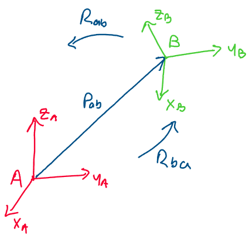
Above: a rigid body transformation involving both rotation and
translation
One way to think about the rigid body transformation between two
rotated, translated frames is as a composition of two simpler
transformations: a pure rotation and a pure translation.
Let’s work out some of the simple details of this approach, and think
about its advantages and limitations.
Our first step in modeling this approach is to come up with the two
required twists: one for a pure rotation and one for a pure
translation.
Let \(\xi_1 \in \mathbb{R}^6\) be the twist corresponding to the pure
rotation. Recall from the previous section that we may define \(\xi_1\)
as:
Where \(\omega\) is the unit vector axis of rotation in
\(\mathbb{R}^3\) and \(q \in \mathbb{R}^3\) is a point on the axis of
rotation.
Now, let \(\xi_2 \in \mathbb{R}^6\) be the twist corresponding to a pure
translational motion. Recall from the previous section that we may
define \(\xi_2\) as follows:
Where \(v\) is a unit vector pointing in the direction of
translation.
To find the overall transformation, we may compose the exponentials of
these two twists via multiplication. First, we define the transformation
that purely changes the orientation:
Where \(\theta_1 \in \mathbb{R}\) is the necessary amount of rotation. Second, we define the transformation that purely changes the position in space:
Where \(\theta_2 \in \mathbb{R}\) is the necessary amount
of translation.
We may compose these two transformations via multiplication to find the
overall transformation between the two rotated, translated frames:
This is one valid way to represent a transformation
involving both rotation and translation! However, note that this
approach to the problem involves the use of two twists,
\(\xi_1, \; \xi_2\), and two displacements, \(\theta_1,\; \theta_2\). Is
there a single twist and displacement we can use to represent the
entire transformation?
As it happens, the answer to this question is yes! We’ll soon explore
this answer in full detail using an approach known as screw
coordinates.
This approach involves representing any arbitrary transformation,
whether it involves rotation, translation, or a combination thereof,
through a single twist \(\xi\) and a single displacement \(\theta\). This
approach will allow us to represent an arbitrary transformation \(g\) as:
For this general case of screw coordinates, what does the twist \(\xi\) look like? This twist will be of the form:
Where \(v\) is a linear velocity and \(\omega\) is a unit
angular velocity vector.
Although we won’t discuss how \(v\) and \(\omega\) are computed in this
section, keep this form in mind as we derive some deeper properties of
exponential coordinates!
Motivating Exponential Coordinates#
Before we proceed further with our development of exponential
coordinates using twists, let’s check in and make sure we understand
why this is something we even want to do!
At this stage in the process, it might seem unclear as to why we want to
go to the trouble of using the matrix exponential and twists. Why not
just deal directly with the rigid body equations of motion?
One of the main reasons we like dealing with twists and exponential
coordinates is that they help us manage complexity when dealing with
the motion of robots and other rigid bodies.
Consider the robot arm below, for example, which has several rigid body
links.
Instead of having to think about each individual rotation and
translation, we manage the complexity of the system by hiding every
movement of the arm behind a clean-looking exponential.
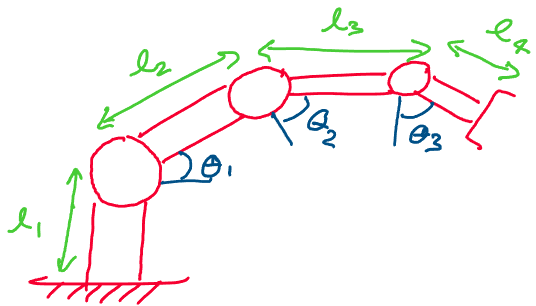\
Imagine we wanted to find the transform from the base of the robot all
the way to the hand at the end of the robot. This transform would be a
function of the three joint angles, \(\theta_1, \theta_2, \theta_3\) as
well as the lengths of each rigid link.
If we were to try computing this transform from scratch, we would end up
with a nightmarishly complex jumble of matrix multiplications and vector
additions.
But, if we use twist coordinates for each rotational joint in the arm,
we’ll soon see that we can elegantly represent the transformation from
the base to the hand of the robot as a simple product of exponentials.
As we can see in the formula above, the matrix
exponential abstracts away all of the complex mathematics of motion
into a simple, easy to read formula.
In the formula above, we see that we have a robot with three joints,
each of which may be described by a twist \(\xi\) and a position
\(\theta\).
Furthermore, if one of the links on our robot was prismatic
(translational), accounting for this would be as simple as adding
another exponential to our transform formula.
As we’ll soon see, twists and the matrix exponential take a complex
geometric problem and simplify it to the point where finding transforms
for complex systems becomes a formulaic process.
Properties of Exponential Coordinates#
Now that we’ve established the basic definitions of exponential coordinates for general rigid body transformations, we must verify that they hold certain important properties. Once we build up a small set of core properties for exponential coordinates, we’ll be ready to apply them to real robotic systems. Let’s begin!
Proposition 13
The matrix exponential maps from \(\mathbf{se(3)}\)
to \(\mathbf{SE(3)}\)
For all valid twists \(\xi = (v, \omega) \in \mathbb{R}^6\),
\(exp(\hat\xi\theta) \in SE(3)\).
Proof: This proposition asks us to prove that the matrix exponential of a twist is a valid rigid body transformation in \(SE(3)\). The approach we’ll take to proving this is to show that for every twist \(\xi \in \mathbb{R}^6\) and scalar \(\theta \in \mathbb{R}\), there exists a rotation matrix \(R \in SO(3)\) and a translation \(p \in \mathbb{R}^3\) such that:
If we can show that every exponential of a twist
corresponds to a matrix of this form, we’ll have shown that every
exponential is in \(SE(3)\). Let’s get started!
Remember that we defined several types of twists. In this proof, we’ll
treat the types of twist one at a time for convenience, and show that
they all correspond to transformations in \(SE(3)\). We’ll begin with the
case of combined rotational and translational motion, and then analyze
the simpler case of pure translational motion.
Case 1: Nonzero rotational motion
Let’s begin by analyzing the twists corresponding to transformations
with nonzero rotation. In this case, the translational motion can either
be zero or nonzero. Our only condition is that there is some change in
rotational orientation.
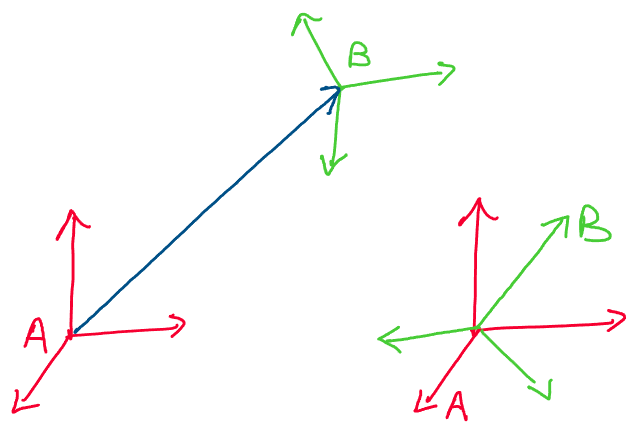
Above: two cases with nonzero rotation
Let’s think about the ingredients that go into forming a twist for a
motion with nonzero rotation. Let \(\omega \in \mathbb{R}^3\) be an
angular velocity vector representing the axis of rotation, such that
\(||\omega|| = 1\). Let \(v \in \mathbb{R}^3\).
Recall that in general, we may express the twist corresponding to a
nonzero rotational motion as:
Recall that for the case of pure rotational motion, \(v\)
simplifies to \(v = -\hat\omega q\), where \(q\) is a point on the axis of
rotation.
Let’s write out the hat map of \(\xi\). To ensure we understand the matrix
we’re working with, we’ll write it out in full.
Our goal is to take the matrix exponential of
\(\hat\xi \theta\), where \(\theta \in \mathbb{R}\) is an arbitrary angle of
rotation, and show that the result is an element of \(SE(3)\).
This is a challenging, multi-step proof! Before we begin, let’s make a
roadmap we can use to plan out our proof process.
First, we’ll aim to transform the matrix exponential of this twist into
a simpler, easier to work with form. Then, we’ll try to find a closed
form expression for that simpler form - an expression without any
infinite sums. Finally, we’ll transform it back to its original form
and see if the resulting matrix is an element of \(SE(3)\).
Let’s begin! First, let’s think of a way to transform the exponential
\(e^{\hat\xi \theta}\) into a more workable form. We’ll do this with a
clever choice of rigid body transformation.
Suppose we have another rigid body transformation, \(g_o \in SE(3)\). We
define this transformation as follows:
Where \(\omega\) and \(v\) are the same as the \(\omega\) and
\(v\) in the definition of \(\hat\xi\).
Using the properties of \(SE(3)\), we know that this matrix has an inverse
\(g_o^{-1}\), which is computed:
Instead of working directly with \(exp(\hat\xi\theta)\),
we’re going to use this additional matrix to gain some insight into the
exponential.
Because \(g_o g_o^{-1} = g_o^{-1}g_o = I_4\), by the definition of a
matrix inverse, we may make the following equality:
Now, we may apply a property of the matrix exponential
to extract two of the matrices from the exponent. We know that for any
square, invertible matrix \(P \in \mathbb{R}^{n\times n}\),
\(\exp(PAP^{-1}) = P\exp(A)P^{-1}\).
Let’s apply these properties to the two outermost matrices in the
expression we derived above:
Although it might initially seem like this is
complicating our expression, this equivalent representation of
\(\exp(\hat\xi\theta)\) will help us calculate a closed form value for the
exponential. Let’s get started on this calculation by focusing on the
matrix inside the exponential, \(g_o^{-1} \hat\xi g_o\). For convenience,
we’ll refer to this term as \(\hat\xi'\).
Let’s try and calculate the value of this expression. First, we’ll
expand out the matrix multiplication.
To simplify this expression further, we’ll use an identity we derived when solving for Rodrigues’ formula. Recall from our Rodrigues’ formula derivation that \(\hat\omega^2 = \omega\omega^T - I\). Applying this formula to the expression above:
Now, we notice that this final expression for \(\hat\xi'\)
matches the expression for the hat map of a twist! Thus,
\(\hat\xi' \in se(3)\).
Let’s go back to where we were in the overall problem. We were trying to
calculate a value for:
So far, we’ve found a value for \(\hat\xi '\). A good next
step in this problem is to calculate \(exp(\hat\xi' \theta)\). Let’s give
this a try!
Using the definition of the matrix exponential:
We’d now like to come up with a closed form matrix expression for this exponential. Recall that when deriving Rodrigues’ formula, a process that had a similar goal of finding a closed form expression for an exponential, we found it helpful to compute a few powers of \(\hat\omega\). Let’s do the same for \(\hat\xi'\), and see if we notice any recurring patterns.
Now, we notice that we have \(\hat\omega \omega = \omega \times \omega\) as a part of the upper right entry of the matrix. Since the cross product of any vector with itself is the zero vector, this entry drops out to product the following:
Let’s use this result to compute one more exponent.
We notice that here, the only change we have is one
higher power of \(\hat\omega\)! We can use these expressions for
\((\hat\xi')^2\) and \((\hat\xi')^3\) to compute higher powers of
\(\hat\xi'\), and show that this pattern of an increasing exponent
continues for higher powers.
Let’s apply this pattern to compute the matrix exponential:
Adding up these matrices, we get the following:
Now, we recognize the sum in the upper left corner as the matrix exponential \(\exp(\hat\omega \theta) \in SO(3)\). Thus, we have:
Perfect! We have now calculated a closed-form value for the matrix exponential of \(\hat\xi'\). All we have to do now is to relate this back to our original twist, \(\hat\xi\). Recall:
All that remains is to substitute in the value for each matrix and compute the result!
Thus, we have found a fully closed-form expression for
a nonzero rotational transform with twist \(\xi\). Let’ now verify that
this matrix is actually in \(SE(3)\).
Looking at the terms one by one, we know
\(exp(\hat\omega\theta) \in SO(3)\),
\((I - e^{\hat\omega\theta})( \omega\times v) + \omega\omega^Tv\theta \in \mathbb{R}^3\),
and the bottom row is a row of zeros and a 1. Thus, the matrix
exponential \(exp(\hat\xi\theta)\) has the form:
This matches the required form of \(SE(3)\)! Therefore, we conclude that when \(\xi\) is any twist corresponding to a nonzero rotational motion:
This completes the proof of the rotational case!
Case 2: Pure translational motion
Let’s now carry out a similar analysis for the case where only
translation occurs. Recall that for the pure translational case, we may
express translational motion using the twist:
Where \(v \in \mathbb{R}^3\) is a unit vector pointing in the direction of translation.
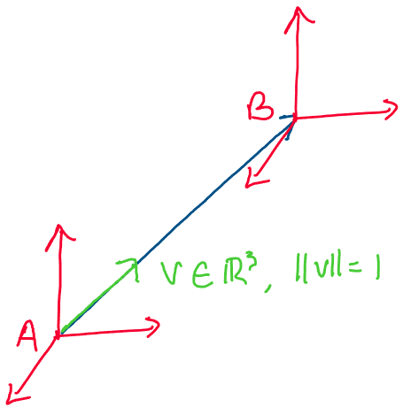
Above: a purely translational motion in direction \(v \in \mathbb{R}^3\)
Let’s attempt to show that the exponential \(\exp(\hat\xi\theta)\), where
\(\theta \in\mathbb{R}\) is the magnitude of the translation, is an
element of \(SE(3)\). Thankfully, this proof will be significantly less
involved than the rotational case.
Let’s lay out a plan for the proof for this case. We want to find a
closed form expression for the exponential:
And use that closed form expression to show that the
exponential is an element of \(SE(3)\).
Once again, we’ll begin this process by computing some powers of the
matrix \(\hat\xi\) and seeing what patterns we notice in the results.
If the second power of \(\hat\xi\) is the zero matrix, then all higher powers of \(\hat\xi\) will be the zero matrix! For instance, if we were to compute \((\hat\xi)^3\), we would find:
Thus, since all powers beyond \(1\) will give us the zero matrix, we compute the matrix exponential of \(\hat\xi\theta\) as follows:
Let’s verify that this result is in \(SE(3)\). In the upper left, we have the \(3\times 3\) identity matrix, which we know is an element of \(SO(3)\). In the upper right, we have an element of \(\mathbb{R}^3\). On the bottom row, we have a row of zeros and a 1. This means that that the matrix matches the form:
Thus, we conclude that for the purely translational
case, the exponential \(exp(\hat\xi\theta) \in SE(3)\). This completes the
second part of our proof.
Let’s summarize our overall result. We showed that when \(\xi\)
corresponds to a nonzero rotational twist,
\(e^{\hat\xi\theta} \in SE(3)\). Following this, we showed that when \(\xi\)
corresponds to a purely translational (zero rotation) twist,
\(e^{\hat\xi\theta} \in SE(3)\). Thus, for all possible cases,
\(e^{\hat\xi\theta} \in SE(3)\). This completes the proof! \(\square\)\
Let’s take a moment to think about what we learned from this proof. Overall, we found a way to calculate the matrix exponential for both possible cases: nonzero rotation and zero rotation. We summarize our solutions as follows:
Pure translational motion: For zero rotation, where \(R = I\) and \(\omega = 0\), we may define a twist corresponding to a pure translational motion as follows:
\[\begin{split}\begin{aligned} \xi = \begin{bmatrix} v\\ 0 \end{bmatrix} \in \mathbb{R}^6 \end{aligned}\end{split}\]Where \(v \in \mathbb{R}^3\) is a unit vector pointing in the direction of translation. The transformation of translating in direction \(v\) by \(\theta\) units is given by:
\[\begin{split}\begin{aligned} g = e^{\hat\xi\theta} = \begin{bmatrix} I_3 & v\theta\\ 0 & 1 \end{bmatrix} \in SE(3) \end{aligned}\end{split}\]Nonzero rotational motion: To describe a transformation with nonzero rotation, we define the twist corresponding to the transformation as:
\[\begin{split}\begin{aligned} \xi = \begin{bmatrix} v\\ \omega \end{bmatrix} \in \mathbb{R}^6 \end{aligned}\end{split}\]Where \(\omega \in \mathbb{R}^3\) is the unit axis of rotation. Note that for the case of pure rotation, \(v = -\omega \times q\), where \(q\in \mathbb{R}^3\) is a point on the axis of rotation.
To find the transformation associated with this twist, we calculate:\[\begin{split}\begin{aligned} g = e^{\hat\xi\theta} = \begin{bmatrix} e^{\hat\omega\theta} & (I - e^{\hat\omega\theta})( \omega\times v) + \omega\omega^Tv\theta\\ 0 & 1 \end{bmatrix} \end{aligned}\end{split}\]Where \(\theta\) is the angle of rotation about the axis \(\omega\).
At this point in our study of exponential coordinates for general rigid
body motions, we only have one more key property left to prove!
Not only do we want to know that \(exp(\hat\xi\theta)\in SE(3)\) for all
twists \(\xi\) and scalars \(\theta\) - we also want to be sure that for
every rigid body transformation \(g \in SE(3)\), we can find a twist
\(\xi \in \mathbb{R}^6\) and a scalar \(\theta \in \mathbb{R}\) such that
\(e^{\hat\xi\theta} = g\). If we’re able to prove that such a twist and
scalar always exist, we may conclude that exponential coordinates
completely cover the space of rigid body transformations in \(SE(3)\).
Proposition 13
The map \(\mathbf{exp: se(3) \to SE(3)}\) is
surjective onto \(\mathbf{SE(3)}\)
Given any homogeneous rigid body transformation \(g \in SE(3)\) consisting
of a rotation matrix \(R \in SO(3)\) and a translation
\(p \in \mathbb{R}^3\), there exists a twist \(\xi \in \mathbb{R}^6\) and a
scalar \(\theta \in \mathbb{R}\) such that:
Proof: We’ll take a constructive approach to this proof. This means
that we’ll prove the statement by explicitly finding a formula for
\(\xi\) and \(\theta\) given a rigid body transformation \(g = (R, p)\). If we
find this formula and show that it always has a solution, we’ll have
proven the statement.
As with before, we’ll break this proof into two cases: one with no
rotation and one with rotation.
Case 1: Pure translation
First, we’ll consider the case of a purely translational rigid body
transformation. Suppose we have a rigid body transformation
\(g(R, p)\in SE(3)\) corresponding to a pure translation. Since no
rotation and any translation occurs, \(g\) is a transform with a rotation
matrix \(R = I\) and an arbitrary translation \(p \in \mathbb{R}^3\).
How may we find a twist \(\xi\) and distance \(\theta\) such that
\(e^{\hat\xi\theta} = g\)?
We know that we may represent a purely translational transformation in
exponential coordiantes with the twist:
Where \(v\) is a unit vector pointing in the direction of
translation. We know that we may convert the arbitrary translation, \(p\),
of the rigid body into a unit vector in the direction of translation by
normalizing it by its magnitude!
Thus, we may use the following twist to represent any purely
translational transformation \(g = (I, p)\):
Now that we have the twist, all that remains is to solve
for \(\theta\). For translational motion, we know that \(\theta\) is the
amount we want to translate in the direction of \(v\). Thus, we conclude
that \(\theta = ||p||\).
Therefore, for any arbitrary rigid body translation, we may find a
twist \(\xi\) and a displacement \(\theta\) such that:
Where \(\xi = [\frac{p}{||p||}, \; 0]^T \in \mathbb{R}^6\)
and \(\theta = ||p|| \in \mathbb{R}\). This completes the proof for the
first case!
Case 2: Nonzero rotation
Now, we want to evaluate the case where \(R\) is not the identity
matrix. Here, we have a rigid body transformation \(g(R, p) \in SE(3)\)
with an arbitrary rotation matrix \(R\neq I \in SO(3)\) and an arbitrary
translation \(p \in \mathbb{R}^3\).
As with the first case, we’d like to find a twist \(\xi\) and an angle
\(\theta\) such that:
This case is more complex than the case of zero rotation, so we’ll take a somewhat different approach! First, we know that for an arbitrary transformation \(g\) with nonzero rotation, the twist will be of the form:
Furthermore, we know how to calculate the matrix
exponential of the hat map of this twist in closed form. To solve for
\(\xi\) and \(\theta\) in terms of \(R\) and \(p\), we’ll take the approach of
matching the terms of the exponential of \(\hat\xi\theta\) with the terms
of \(g(R, p)\).
Thus, we calculate \(exp(\hat\xi\theta)\) for a nonzero rotation and
equate it with \(g(R, p)\):
Using this approach, we’ll find our angle \(\theta\) and the two vectors \(v\) and \(\omega\), which define our twist \(\xi\). Let’s start by equating the rotation matrix terms:
For any rotation matrix \(R\neq I \in SO(3)\), are there
\(\omega\) and \(\theta\) which make this equation true? You may recall that
previously, we proved that the exponential map of \(so(3)\) is surjective
onto \(SO(3)\). Thus, for any \(R \in SO(3)\), an \(\omega\) and \(\theta\) such
that \(e^{\hat\omega\theta} = R\) must exist!
This guarantees the existence of \(\omega\) and \(\theta\) for an arbitrary
transformation \(g\) with nonzero rotation. Now, all that remains is to
show that \(v\) exists, and we’ll have our entire twist, \(\xi\).
To solve for \(v\) in terms of \(R\) and \(p\), we equate the terms in the
upper right entry of the matrix, and factor out \(v\).
We notice that the term in brackets is a matrix! If we can invert this matrix, and multiply both sides by this inverse, we’ll have found a solution for \(v\).
But, to guarantee that we can always do this, we must show that this matrix is invertible for every nonzero rotation, where \(\omega \neq 0 \in \mathbb{R}^3\) and \(\theta \in (0, 2\pi)\). How can we show that this matrix is invertible? First, let’s split it up into two terms. We define these terms:
Such that: $\(\begin{aligned} A = (I - e^{\hat\omega\theta})( \hat\omega) + \omega\omega^T\theta = A_1+A_2 \end{aligned}\)\( We may think about invertibility in terms of the *null space* (kernel) of the overall matrix \)A\(. Recall that the null space of a matrix \)A \in \mathbb{R}^{n\times n}\( is the set of all nonzero vectors \)x \neq 0\in \mathbb{R}^n$ such that:
If the only vector satisfying this equation is the zero
vector, we say that the null space of \(A\) is trivial. Using our
knowledge of linear algebra, we know that if the null space of \(A\) is
trivial, then \(A\) is invertible! Let’s apply this useful fact to our
problem.
First, we’ll solve for the null spaces of the matrices \(A_1\) and \(A_2\).
We may show that the null space of \(A_1\) is spanned by the vector:
While the null space of \(A_2\) is spanned by the vectors:
Imagine that a nonzero vector \(v\) is in the null space of both \(A_1\) and \(A_2\). If this is the case, then:
Thus, if there any vector is in the null space of \(A_1\)
and the null space of \(A_2\), we know that it will be in the null space
of the entire matrix, \(A\). Therefore, if the null spaces of \(A_1\) and
\(A_2\) have any overlap, \(A\) will have a nontrivial null space, and
will be noninvertible.
On the other hand, if we can show that the null space of \(A_1\) has no
overlap with the null space of \(A_2\), we may conclude that \(A\) has a
trivial null space, and must be invertible!
To show that there is no overlap between \(\{v_1, v_2, v_3\}\), the null
space vectors of \(A_1\) and \(A_2\), we must show that for any nonzero
unit vector \(\omega \in \mathbb{R}^3\), \(\{v_1, v_2, v_3\}\) are linearly
independent.
As it happens, this set of vectors is actually linearly independent
for any choice of \(\omega\)! Although we won’t prove this here for the
sake of brevity, this is a useful exercise to test your understanding.
Since this set is always linearly independent, we conclude that there is
never any overlap between the null spaces of \(A_1\) and \(A_2\), which
leads us to conclude that for any nonzero \(\omega \in \mathbb{R}^3\) and
\(\theta \in (0, 2\pi)\), \(A\) is always invertible.
Thus, we may compute the \(v\) term in our twist as:
Now, we’ve solved for an axis of rotation \(\omega\), an
angle \(\theta\), and a velocity \(v\) given an arbitrary rigid body
transformation \(g(R, p) \in SE(3)\) with nonzero rotation. Thus, we know
that for this case, we can always find a twist \(\xi = [v, \omega]^T\) and
angle \(\theta\) such that \(exp(\hat\xi\theta) = g(R, p)\).
As we’ve shown that a twist \(\xi\) and a displacement \(\theta\) will exist
for all choices of \(g \in SE(3)\), we conclude that the exponential map
is surjective from \(se(3)\) to \(SE(3)\). This completes the proof!
\(\square\)
Because we can completely characterize any rigid body transformation
by the exponential of the hat map of \(\xi\theta\) for some twist
\(\xi\in \mathbb{R}^6\) and displacement \(\theta\in \mathbb{R}\), we call
the product \(\xi\theta\) the exponential coordinates of a rigid body
transformation.